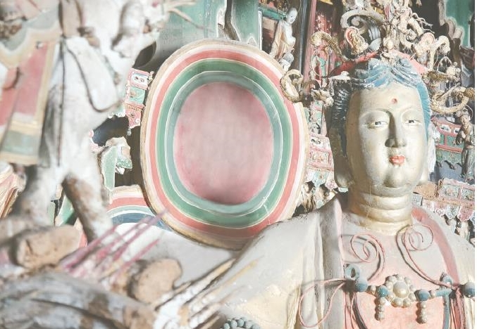

同一座殿堂，多种文化相遇。
长治观音堂创建于1582年。其殿内的明代彩塑与悬塑，把儒、释、道造像组织在同一建筑空间中。这里提示我们：理解悬塑，不仅要辨识人物，还要观察不同思想与图像如何在地方社会中相遇。
看点：从密集造像中寻找人物姿态、服饰和位置的差别。
史料与阅读 ↗图片：长治日报 / 长治市政府网站深读卷 · 泥土里的文明
HISTORY · CRAFT · CULTURE一门技艺的来路，一代代人的创造。
循着时间、材料与故事，读懂悬塑背后的中华底蕴。
彩塑以塑造的形体与表面彩绘共同表现形象；悬塑则依托建筑的墙壁、梁架等展开，把人物、山石、云气、楼阁组织成向空间伸展的场景。它的“凌空”感，背后是支撑、连接与布局的共同作用。
与主要附着于平面的浮雕相比，悬塑常呈现更强的前后层次；但圆塑、浮塑与悬塑也会在一座殿堂里相互配合。欣赏时，既看一尊造像的神情，也看整座殿堂如何成为一个整体。
延伸阅读 · 科普时报 ↗壹 / 沿时间寻迹
从传统彩塑的塑绘经验，到寺观中与建筑相融的立体场景，悬塑的历史需要结合实物、题记与文献来理解。下面四个切面连接明代遗存与当代传承，并不把某一处古迹的创建当作这门技艺的起源。

长治观音堂创建于1582年。其殿内的明代彩塑与悬塑，把儒、释、道造像组织在同一建筑空间中。这里提示我们：理解悬塑，不仅要辨识人物，还要观察不同思想与图像如何在地方社会中相遇。
看点：从密集造像中寻找人物姿态、服饰和位置的差别。
史料与阅读 ↗图片：长治日报 / 长治市政府网站贰 / 看泥土成形
木骨、纤维、泥层与彩绘各司其职。点选一种材料，看看它如何参与造像。这里呈现传统木骨泥塑的一般原理，不是对小西天具体文物内部结构的实测复原。
木骨为泥塑提供支撑，姿态、体量与受力需要先行考虑。对于与建筑结合的悬塑，支点和连接关系还必须配合所在空间；看似轻盈的姿态，并不意味着没有依托。
再看实景：向外伸出的衣袖、云朵和楼阁，背后可能需要怎样的支撑安排？
整体体量与精细表情需要不同的操作。粗泥先形成大轮廓，细泥再刻画面容和衣褶；干燥、检查与表面整理也不能省略。前面的四步互动是便于理解的概括，真实工序还会随材料、尺寸与地域传统调整。
不能。色名描述视觉感受，材料成分则需要科学分析。年代、重绘、老化和光线都可能改变今天看到的颜色。页面的色签用于审美体验，不代表对照片中文物颜料的鉴定。
叁 / 读文化之重
以下从空间、信仰、生活与知识四个角度解读。展开每一页，带着一个问题重新观看照片。
建筑提供边界，塑像带来体量，彩绘连接节奏。悬塑把多种艺术融入同一场景：人物的大小和朝向、楼阁的高低、云带的转折，牵引观看者的目光。这种对整体空间的经营，是理解其艺术价值的关键。
试着观察：你的目光先落在哪里，又沿什么线索向上移动？小西天的佛教题材，将净土想象化为可见的楼阁与众生；观音堂的三教造像则呈现另一种地方文化面貌。它们记录了不同信仰的表达，也说明传统文化在具体地方与时代中，具有丰富的相遇和交融。
试着思考：同样是满堂造像，不同寺院为什么讲述不同的故事？人物的冠服、发髻、表情，乃至缩小的建筑与器物，都是细读的入口。它们让我们追问当时的审美与工匠的生活经验。但艺术形象也包含程式与想象，不能把每一处细节直接当作现实生活的照相。
试着寻找：哪一个姿态或表情，让你感到它与今天的人仍有共鸣？木骨的连接、泥层的配合与表面彩绘，都保存着制作知识；题记、碑刻与文献则提供另一组线索。将实物和文字相互参照，才能更深入地研究营造、塑绘与后来的修缮，让工匠的经验重新被看见。
试着思考：除了完整造像，一块残件、一段题记为什么也值得保存？解读依据：科普时报 · 长治观音堂资料 · 国家典籍博物馆展览说明
肆 / 把美留给未来
泥塑是多种材料组成的脆弱整体。泥层可能开裂，彩绘可能起翘或粉化，内部支撑也会老化。保护需要先调查与记录，再依据材料和病害制定方案。
数字采集能够记录形态、帮助研究和传播；原物中真实的材料、制作痕迹与历史信息，仍需要长期守护。参观时保持距离，遵守现场拍摄规定，让观看成为温柔的相遇。
读一个真实的彩塑修复案例 ↗1 / 3
选择你的判断，看看保护工作背后的理由。